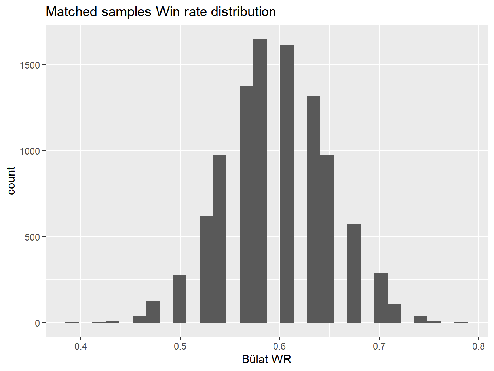

Using a Pseudo-Propensity Score Matching to reduce sample bias when comparing win rates between players in LoR.
In the context of Collectable Card Games (CCG) win rates are probably the most desidered information from the community. If it’s about decks, the meta is shaped around these values (also playrates), if it’s between players it can be a proxy to define who are the strongest players. Yet, one has to be carefull when computing even just single means of win rates, results are based on the individual match ups (MU) between archetypes so that the aggregated WR of a deck is the result of a weighted mean among the different MU. When applyed to a player, again, the playrates are still a factor to consider but this is rarely done.
Let’s create an example from Legends of Runeterra (LoR) to exaplain this player’s WR bias in a simplified context where both of them use the same deck-archetype.
If we just looks at the aggregated win rate then the WR of PlayerB (60%) > WR of PlayerA (40%) but saying that PlayerB is better than PlayerA would be disingenuous, the reason being, they played different MU with completely different excepted WR.
While writing this document the expected WR are:
So, the expected number of wins from PlayerA is 3.148
While, the expected number of wins from PlayerB is 6.355
The expected and actual results are pretty much the same for each player, but since we just showed they are obtained in different context the 2 WR can’t be directly compared and we can’t say who’s the better player.
Sample bias is a common problem in statistics and pretty much any social/medical study have to deal with it, but while we are not in the context of the golden standard, a Randomized Study, we can elaborate our data so that it’s as similar as possible to it in which the data between each group of interest are as balanced as possible (Ceteris Paribus / other things being equal).
The objective of this document will be to explain a possible way to apply those techniques to LoR and the comparison of WR among players.
The data are a sample of 326437 matches played at Master rank during patch 2.7 and 2.8 (so same buff/nerfs).
We are going to present 3 examples of pair of players who played three among the most popular archetypes:
The players were chosen among those with the higher amount of games with the archetypes, but still a relevant difference in sample sized among the two on them.
Also, there is a bit of personal curiosity and bias like for choosing the “Discard-derby” Bülat/Meliador and the pair of Alanzq/SouL Who Wanders for the memes.
To have comparable win rates one needs to balance the MU between the players. The easiest way is to match each game from groupA with another from groupB whose opponent’s archatypes is the same. A match against NT with a game of NT, a game of Discard with a game of Discard and so on. While not far from what will be the proposed method, there’s the risk of not being able to match too many games. Let’s say that groupA because of the shard/server and timezone in which he plays, have higher chances of playing against rares decks, it could be be hard if not impossible to have a perfect MU-match in the “control group” groupB.
To solve this problem I propose the use of a proxy to the MatchUp archtype: the excepeted Win Rate of the match played. If n archetypes have similar MU values, than if I can’t match it by the exact MU I can select a game from one of the alternatives where I’m expected to have similar results. The assumption is that this wouldn’t effect the mean WR if it is the only variable that needs to be considered.
It’s then necessary to define a caliber that limits the range of archetypes which we considered similar (the value used here is 2%). The fact I’m matching on a “pseudo”-continuous (it’s discrete with possible domain (0,1)) variable and the use of a caliber could remind of the use of Propensity Score Matching (PSM). While the code used is indeed from a package mostly for PSM (MatchIt) the theory is completely different.
When using a propensity score we estimate the probability of treatment assignment conditional of observed covariates. The treament here would be being played by PlayerA or PlayerB. The PS would then be used to match sets of treatment and untreated subjects who share a similar value of propensity score. Treatment “effect” is estimated comparing outcomes between treated and untreated subjects in the matches sample. Here the “effect of a player (~skill)” compared to someone else player would be comparing win rates obtained from the matched sample.
Assuming that the archetypes are the only predictor variables, the model for the PS score is:
\[ logit(p=PlayerA|X) = \alpha + \sum_{i=1}^n \beta_{1} X_{1i} + \sum_{i=1}^n \beta_{2} X_{2i} + \sum_{i=1}^n \beta_{3} X_{1i}X_{2i} \]
Where \(\beta_1\) is a m-dimensional vector where m is the amount of archetypes (minus 1) a player played, and \(\beta_2\) is the corresponding for the archetypes used by the opponent.
We would have to drop the interaction component (\(\beta_3\)) as we don’t have enough data but overall the model by itself is feasible. But again, we are not proposing the use of PS but an algorithm/procedure that works in a similar way also, the proposed change of using the MU-WR as proxy would simplify the model into a simple univariate logistic regression:
\[ logit(p=PlayerA|X) = \alpha + \beta_1 X_1 \] Now \(\beta_1\) is a single value as \(X_1\) is now a continuous variable of the match ups win rates.
Aside for archetypes, are there any other covariate we can use? All time-dependent covariates are excluded. For example the “starting game time” is pretty much a leaker variable of the playerID (players tend to have a similar pattern in the time they can play, even more different among different shards). The patch shouldn’t be of any use. The remaining data which could be used are “order of play” (Fig:1) and “total turn count” (Fig:2), but “turn order” should be already balanced as it’s supposed to be random and equally distributed.
Figure 1: Order of play
Figure 2: Turn count
In the first example (Azir/Irelia) there seems indeed to be balance for among the players’ potential predictors while there seems to be a little unbalance in the “Discard example” for order of play. So, aside from visualization, it’s better the check the balance by the numbers with the Odds Ratio (OR).
Table 1: Tentative covariate balance for Azir/Irelia example
| Characteristic | N | OR1 | 95% CI1 | p-value |
|---|---|---|---|---|
| Total Turn Count | 1652 | 1.00 | 0.99, 1.01 | 0.7 |
| Order of Play | 1652 | 1.06 | 0.87, 1.29 | 0.6 |
|
1
OR = Odds Ratio, CI = Confidence Interval
|
||||
Table 2: Tentative covariate balance for Discard example
| Characteristic | N | OR1 | 95% CI1 | p-value |
|---|---|---|---|---|
| Total Turn Count | 1028 | 1.04 | 1.03, 1.06 | <0.001 |
| Order of Play | 1028 | 1.11 | 0.85, 1.44 | 0.4 |
|
1
OR = Odds Ratio, CI = Confidence Interval
|
||||
In the “Discard-example” the unbalance was actually for the turn count. While now a potential addition to the model we won’t use them as it would make the model easily reproducible for those who have not access to a match total turn count (number of times a players has initiative). Finally, the following tables display the distribution of the expected win rates for each player:
Figure 3: Expected WR distribution - Azir/Irelia example
Figure 4: Expected WR distribution - Discard example
In the figures (Fig.3 between Alanz and SWW there doesn’t seems to be a big different in MU played but in Fig.4), the Discard example between Bülat and Meliador there’s a clear difference in the MU distribution and so the expected WR distribution.
A good rule when matching a continuos variable is trimming the starting dataset so that both groups has the same range of possible values, simply put the values are restricted to the maxmin and minmax of each group.
For Azir/Irelia the inizial range is 0.358, 0.836
For Discard the inizial range is 0.281, 0.706
Once trimmed, for Azir/Irelia, the range goes to to 0.374, 0.836, for Discard there are no changes.
The implementation of the matching is done as applying an optimal 1:1 matching. By applying a matching algorithm, compared to the usual Propensity Score Matching (PSM) procedure there’s a problem by having multiple rows with the same MU WR (so more candidates for the match). Usually the algorithm choose the control unit with a specifc order (like the first by ascending/descending order) but it would be bad here as the match should ideally be chosen at random among all the exact or similar match (within the caliber).
So, the solution proposed is to choose at random among the many match candidates, match the data, compute the resulting WR for each player and repeat the whole process n times (10^5 in this document) and get the distribution of the mean WR. To make replicate the random component we just need to permute the data before at the start of each iteration of the matching.
For those who would like to replicate the process this is the code I used The matching results are as shown is Fig.5 and Fig.6.
Figure 5: Relative frequencies of Matched WR
Figure 6: Absolute frequencies of Matched WR
With Fig.6 in particular it’s possible to see how the matching perfectly create the balance we wanted to archive but as mentioned, the result is dependent on the order of the rows, so I did 10^4 permutations of both example data.
| No Matching | Matched | |
|---|---|---|
| Bülat | 59.63% | 59.70% |
| Meliador0 | 56.52% | 56.52% |
| Alanzq | 59.71% | 59.30% |
| SouL Who Wanders | 49.21% | 49.21% |
Sadly for me, I didn’t choose an example that showed significant results by matching or not, still it’s not like the results has too often and the objective of this article is to make people more aware of the sample bias problem.
While the mean for the “treat group” doesn’t change as it’s the “control group” the one that’s reduced here to match the other one, it’s not like it doesn’t change even by a little at each iteration/permutation. This can be seens by the distribution of WR obtained of the 10^4 permutations.
